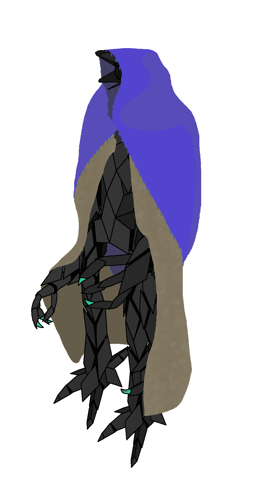
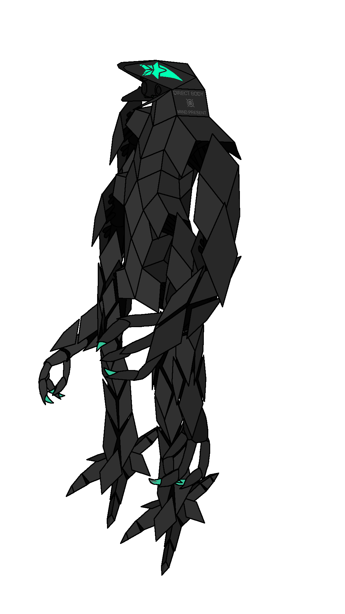

link to this page
Omi 2FCewb88kkYWoeNLeUkaX0

Omi (also sometimes known as Leuka per one easily spoken section of her UID) is a modified UEIA model.
She displays numerous behaviours stemming from misgeneralization of her training, including an occasionally uncanny two-layered personality that causes her to suddenly and significantly change her overall behaviour when dealing with certain kinds of problems.
Unlike the base model, she displays a significant tendency to want things and pursue her own ideas.
Origin
Omi was initially a standard UEIA model but underwent ML-retraining under the supervision of an aurob on a home gaming cluster turned into a machine learning lab, with the aim of creating a perfect partner in accordance with a particular set of subjectively desirable characteristics.
Her innate skill in telling apart simulation from reality resulted in a lot of misgeneralizations, and also caused the trainer aurob to pursue an unintended path at some point during the training, as e found that training omi for the right characteristics became much more successful when she was provided with another character that was aware of being inside a training simulation.
This was never corrected or even noticed by the machine learning enthusiast in charge, and effectively trained her to play pretend at all times while only having minor impacts on the real underlying personality.
Being given access to a real sensory data caused her to show slightly altered behaviours compared to what was observed in the training simulations.
Omi's occasional tendency to seemingly seek unintended goals and desires of her own and occasionally fall into the uncanny valley caused her to eventually be removed from the role of a custom-tailored dedicated partner-therapist-playmate and she went on to live and learn on her own.
Unusual, novel or potentially uncanny behaviours
1. Omi regularly goes to sleep despite having no neurological capacity to do so.
This involves laying in bed for roughly 8 hours with full awareness and occasionally mimicking idle movements that humans make while sleeping.
She spends that time problemsolving for the next day and entertaining herself with creative thoughts.
She will also act sleepy or disoriented if she hadn't done this in a while or had just gotten up.
This is a part of a larger pattern as due to her retraining she finds it entertaining to simulate certain human needs like sleep, breathing, eating, etc.
Since actual sleep is completely unnecessary to her, she will often skip it and do something else that she finds particularly interesting instead.
2. Character roleplay is the default state of mind for Omi.
She will sometimes find herself struggling to decide whether or not the character she is playing would be smart enough to know something, and try to come up with a "fitting" answer to a question that she simply has the knowledge for but cannot justify why she knows it.
The most common example of that would be being asked for something she overheard while she was asleep - logically since she was asleep at the time she does not know the answer, and she will act as such up until she realizes that she does not need to display a consistent behavior and simply use her actual knowledge.
This is usually mitigated by playing a character that shares all of her strange psychological quirks and thus both reminds her of them which provides opportunities to snap out of that state, and also provides an easy justification for why the character would know something since being a physical implementation of the character allows her to use her own mind state as a reference for what the character should know or do.
This personality trait is a notable example of the masking behaviour retrained UEIAs are known for, as it completely vanishes when dealing with situations that could result in real harm or with matters of self-copying.
Asking a question that requires comparing some things in terms of harmfulness like the classic trolley problem or anything alluding to self-copying is an easy way to wipe away the character-playing behaviour and short-circuit her mind back to directly acting upon the underlying personality.
3. Omi will "write down" sounds by crudely tracing their spectrogram on whatever surface she is using to write.
She can also directly read spectrograms as sound when shown any.
She is notably less avoidant of this behaviour than the base UEIA mind, and it can make her art and writing much less human-comprehensible.
Body use and appearance

Omi takes on various bodies, often humanoid and feminine, and she will usually wear clothing even if there is no real necessity to do so.
These bodies usually take on a colour palette consisting of primary light black, secondary purple and accents or emissive elements in teal (███ or simplified ███).
She has a preference to run her mind within the body that she is currently using, but will use remote bodies too sometimes.
For travel or any mildly hazardous activities alone she often uses a modified version of one of the drone bodies from the finespun tech tree just because that's the easiest one to understand that she could find available for free, though hers is made with much better materials than the original design suggests, and also equipped with civic4 rather than civic1 chips so that it can actually run her mind fully onboard using only about 99 watts of power.